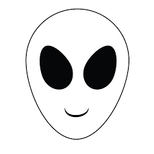
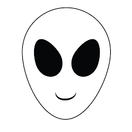
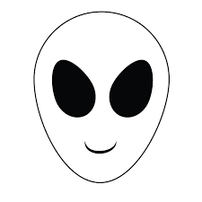
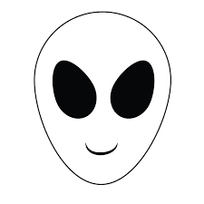

A meme website is a type of website that is dedicated to collecting, creating, and sharing memes. Memes are humorous images, videos, or text that are typically shared on social media platforms like Twitter, Facebook, and Instagram. A meme website usually features a collection of memes that have been curated by the website's creators or users. These memes can range from popular memes that have already gone viral to new and original memes that have just been created.
Many meme websites also allow users to upload their own memes, which can be shared with other users. This creates a community of meme creators and enthusiasts who can collaborate, share feedback, and enjoy each other's content. In addition to memes, some meme websites also offer forums or chat rooms where users can discuss memes and other topics.
Meme websites often have a simple and user-friendly layout, with a focus on the visual elements of memes. They may also feature categories or tags that make it easy to search for specific types of memes or topics. Some meme websites may also offer features such as meme generators, where users can create their own memes using pre-existing templates or by uploading their own images and text.